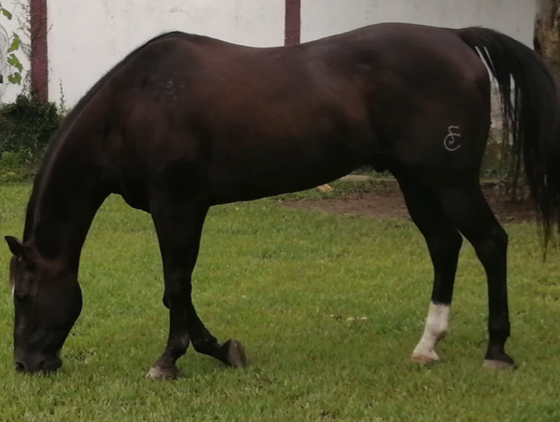
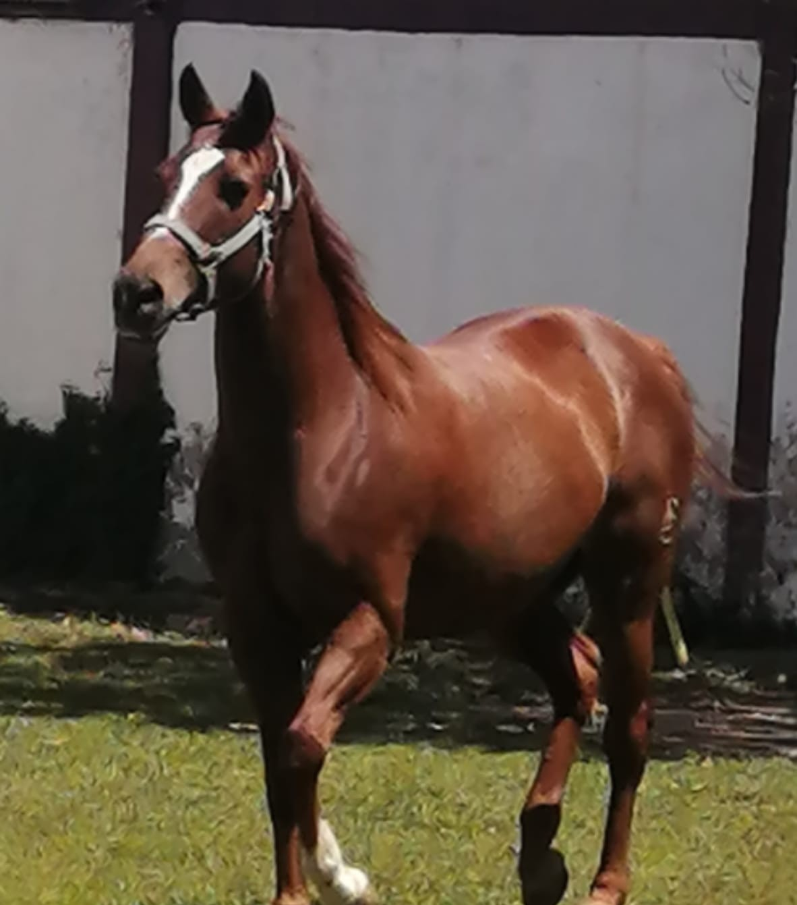
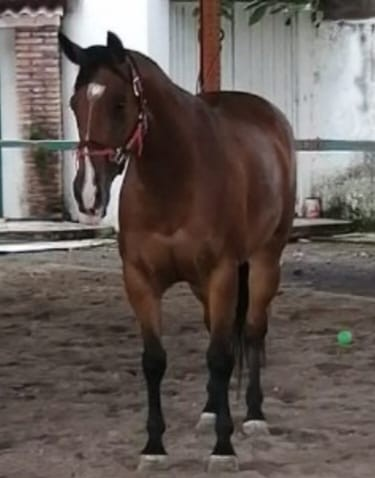
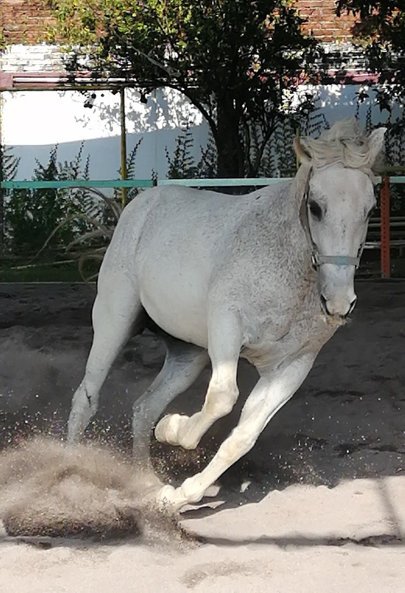

Nuestros Caballos
Haz clic o toca las imágenes para conocer más sobre nuestros caballos.

Cantador

Nena

Xena

Palomo
La higiene es fundamental para el bienestar del caballo. Deben cepillarse crin, cola, patas y cuerpo para mantener el pelaje limpio y saludable. El baño debe realizarse una vez por semana, ya que su piel produce una grasa natural que los protege de infecciones y picaduras. Los ojos y los dientes necesitan limpieza diaria para evitar infecciones o problemas alimenticios. Las caballerizas deben mantenerse limpias y libres de estiércol, utilizando preferentemente cascarillas de arroz, que ayuda a evitar la proliferación de hongos.
En cuanto a la alimentación, debido al tamaño reducido de su estómago-de unos 25 a 30 centímetros de diámetro-, el alimento debe circular de forma constante. La hidratación es esencial para evitar cólicos, una de las principales enfermedades; rastrojo de maíz amarillo, por su contenido de grasa beneficiosa para la digestión; y el forraje procesado, que incluye mezclas industriales balanceadas especialmente formuladas para equinos.
En materia de salud, aunque las consultas veterinarias pueden ser costosas, en el centro se manejan internamente las afecciones menores. Entre las enfermedades más comunes se presentan la aguadura, causada por el mal corte del casco; los sobredientes, que afectan la capacidad para alimentarse; y el hormiguillo, que daña los cascos. Es fundamental revisar con regularidad las patas, el lomo y los dientes. El mantenimiento comienza desde los tres años, pero el temperamento se forma desde que nacen, siendo el buen trato un factor decisivo en su comportamiento.
Todos los caballos del centro tienen un temperamento noble, aunque incluso los más temperamentales pueden comportarse bien si se les trata con respeto y constancia. Sin un manejo adecuado, pueden volverse impredecibles. Necesitan vivir en manada, con libertad de movimiento; por ello, se rotan entre dos áreas abiertas para favorecer su ejercicio y bienestar. Pueden ser montados por varias horas al día, siempre que se les proporcione descanso y los cuidados necesarios.
Finalmente, las herraduras deben cambiarse cada mes y medio. En casos especiales como el de Palomo, se requieren herraduras diseñadas para dar soporte a lesiones o corregir pisadas, lo que permite mantener su movilidad pese a las limitaciones físicas.